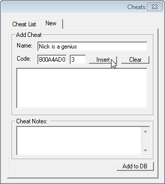

Want to know the range on your controller but don't have a cool Everdrive? Here's how. You'll need:
Use the netplay guide if you don't have the latter. Don't worry about being on wi-fi or whatever, you don't need an internet connection for this.
Launch SSB with the gameshark code 800A4AD0 0003 and press Z. The hundreds place is cut off if there's a negative sign.
You'll be booting into system debug mode, which requires a gameshark code. To add the code, open PJ64k and launch smash, then go to Options -> Gameshark codes.
Click the "new" tab, then fill in the fields as shown below. For the name, put "Range test" or whatever you want. For the code, put 800A4AD0 in the first box, and 3 in the second box, then click insert. Click "add to DB".
Click back to the "Cheats List" tab, and scroll around and find the code you just added, and check the check box.
This is your range display. Move the stick around and the top two numbers will display the X and Y values you're inputting. The only caveat is that they max out at 3 characters, so negative values aren't displayed properly. If your controller has high range and you input say -113, it'll be displayed as -13. It's reading the value fine, it just won't display the leading 1 if the value is less than -99. If you're using the raw plugin, this should be accurate to console.